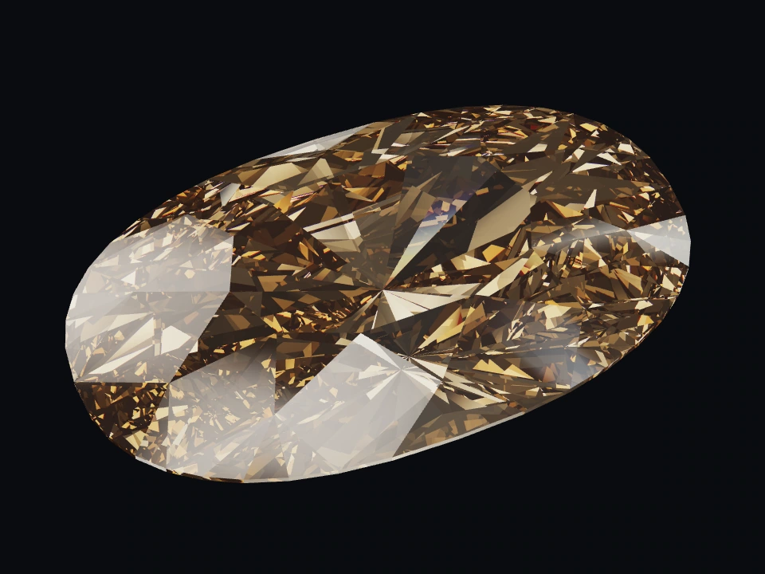
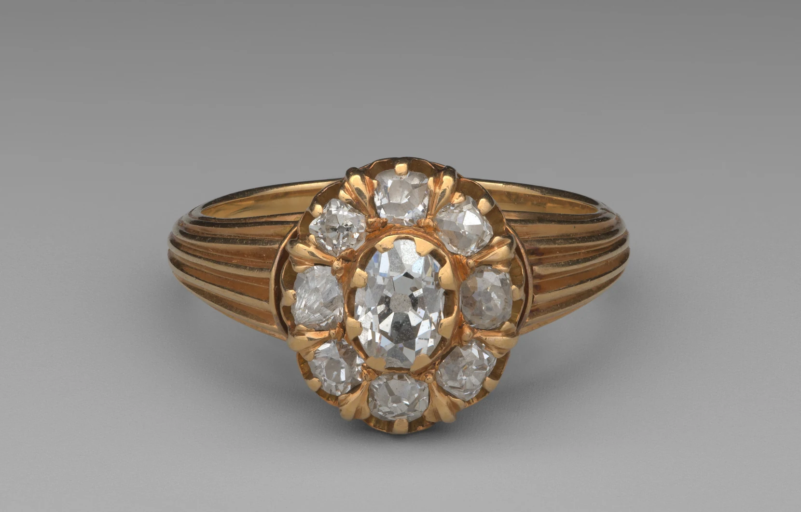

Episodenpartner
Dietmar nennt dein Unternehmen als Unterstützer der Folge. In der Folgenbeschreibung führt ein Link zu deiner Website.
Der Videocast mit Dietmar Vogelmann
45Minuten
am Tisch

Goldhändler, Goldschmiedinnen und bekannte Gäste sprechen mit Dietmar über die Funde und Entscheidungen, die ihnen im Gedächtnis geblieben sind.
Das Format
Ein Ring, drei Perspektiven. Der Händler schaut auf die Legierung, die Goldschmiedin auf die Fassung, der Besitzer erinnert sich an den Menschen, der ihn getragen hat.

Was verraten Punze, Verarbeitung und Zustand? Wann lohnt es sich, für ein geerbtes Stück jemanden zu suchen, der es weiterträgt?
Beim Blick in einen Stein fallen Einschlüsse und kleine Beschädigungen auf. Welche Schlüsse lässt das zu, und wann braucht es einen Laborbericht?
Manche Stücke kommen in die Werkstatt, andere in die Schmelze. Wer trifft diese Entscheidung und woran macht er sie fest?
Über Dietmar
Bei Nachlassgold in Karlsbad kommen Menschen mit geerbtem Schmuck, Münzen oder einem einzelnen Ring zu Dietmar Vogelmann. Er erklärt ihnen, wie Feingehalt, Gewicht und Tageskurs sein Angebot bestimmen.
Auf TikTok und Instagram beantwortet er Fragen aus dem Goldhandel. Bei Goldgezwitscher sitzt ihm jemand gegenüber, der ein Stück aus einem ganz anderen Blickwinkel kennt. Und weil das Gespräch gefilmt wird, lässt sich am Objekt zeigen, worum es geht.
Mehr über Dietmars Arbeit

Crowdfunding auf Startnext
Dietmar plant eine Crowdfunding-Kampagne für den Dreh der ersten Folgen. Wer von Anfang an dabei sein möchte, kann sich den Start im Kalender vormerken.
Start im Kalender merkenFür Sponsoren
Ein Juwelier, eine Goldschmiede oder ein Unternehmen aus der Edelmetallbranche kann eine einzelne Folge begleiten. Zwei Vorschläge für die Zusammenarbeit.
Dietmar nennt dein Unternehmen als Unterstützer der Folge. In der Folgenbeschreibung führt ein Link zu deiner Website.
Zusätzlich zur Nennung und Verlinkung erscheint dein Logo im Video. Dietmar stellt dein Unternehmen in einem kurzen, gekennzeichneten Werbeblock vor.
Du hast ein Thema im Kopf? Schreib Dietmar, wer ihr seid und welche Folge zu euch passen würde.
Sponsoring anfragen

Social Media & Kontakt
Mit Dietmar ins Gespräch kommen.
Auf seinen Feingold-Vogel-Kanälen zeigt Dietmar, worauf er beim Bewerten von Schmuck achtet.
Datenschutz zu diesen Links